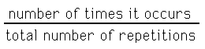
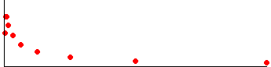

| Saying something happens with probability 1 does not mean it always happens; saying something happens with probability 0 does not mean it never happens |
| Rather, suppose the process is repeated again and again. We compute the fraction |
|  |
| If the fraction goes to 1 as the total number of repetitions goes to infinity, the event happens with probability 1. |
| If the fraction goes to 0 as the total number of repetitions goes to infinity, the event happens with probability 0. |
| Under forced circumstances, this perfectly sensible definition can lead to some counterintuitive results. |
| For example, suppose a coin is tossed infinitely many times, and heads comes up on only the |
| 1st, 2nd, 4th, 8th, 16th, 32nd, 64th, 128th, 256th, 512th, 1024th, ... |
| tosses. |
| That is, heads comes up only on the tosses numbered by powers of 2, and all other tosses give tails. |
| Here we plot the fraction (vertically, the top of the vertical line is at 1) vs n for n to 1024. |
|  |
| The fraction goes to 0, so we are left with the odd situation that heads comes up infinitely many times, yet the probability of getting heads is 0. |
| So: probability = 0 does not mean an event never occurs, just that it is increasingly unlikely with more repetitions. |
| Also, probability = 1 does not mean an event always occurs, just that is is increasingly likely with more repetitions. |
Return to fBm roughness.